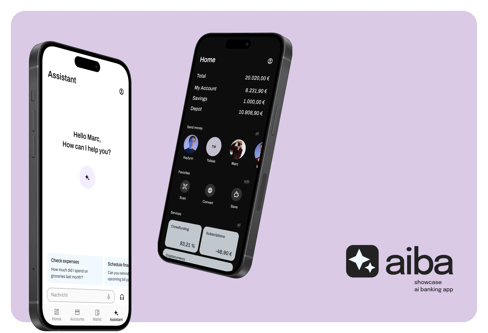
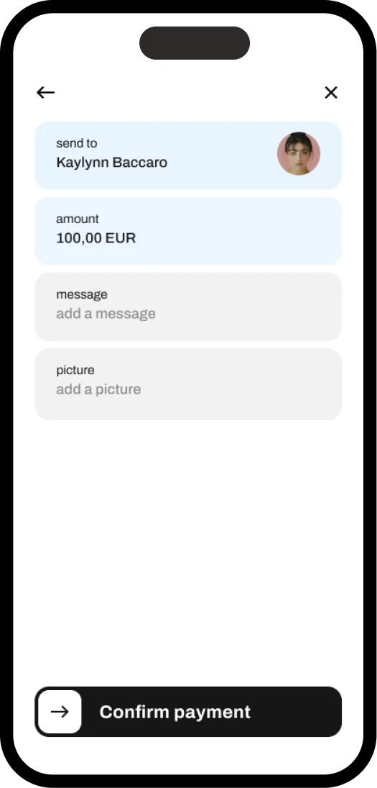
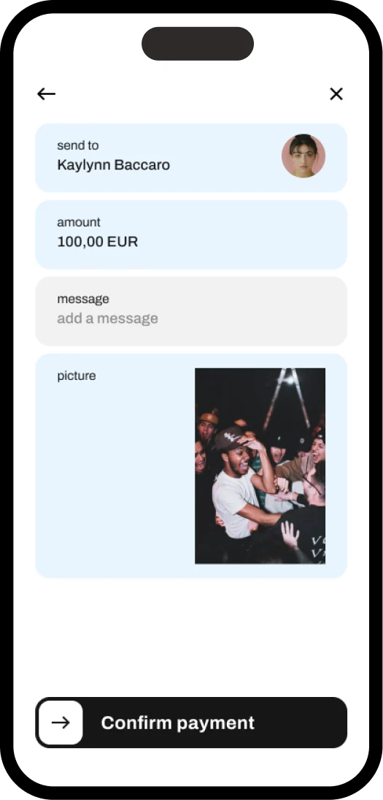

Work 02–07
More work
Further work in logistics and crisis communication is available on request. Your invitation link takes you straight in.
Work 02–07
Further work in logistics and crisis communication is available on request. Your invitation link takes you straight in.
aiba – an AI assistant for mobile banking
I designed aiba in 2024, when chat in banking apps was still a promise. Today exactly this is on the roadmaps of banks. It combines what I built for DKB, Atruvia and other banks over nine years: voice control, chat assistants and secure payments.
9
years designing for banks
8
banks, from direct bank to private bank
2
steps to a transfer

From account data to answers.
Banking apps show transactions, but the analysis is left to the customer: filter, scroll, calculate.
An app that answers questions about your money and acts on them.
It started with KIU, Atruvia's AI chat assistant, where I worked on the first studies. When ChatGPT showed what was possible, I carried the idea forward in my own study – the rest of the app is built around this assistant. It also draws on DKB's Siri integration and intent training for Alexa and Siri.
Step 1
One question is enough, spoken or typed. aiba gives the total, lists the items and saves the report as a PDF.
Step 2
Recipient, amount, done. A swipe confirms the payment, so nothing goes out by accident.




Step 3
Current account, savings and portfolio in one balance, all cards in one wallet.
What was a concept in 2024 is now on the roadmap of many banks. aiba shows how voice, chat and payments come together in one interface – without security getting in the way.